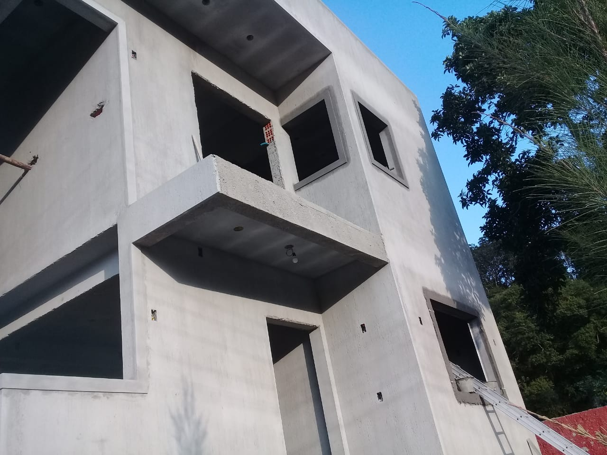
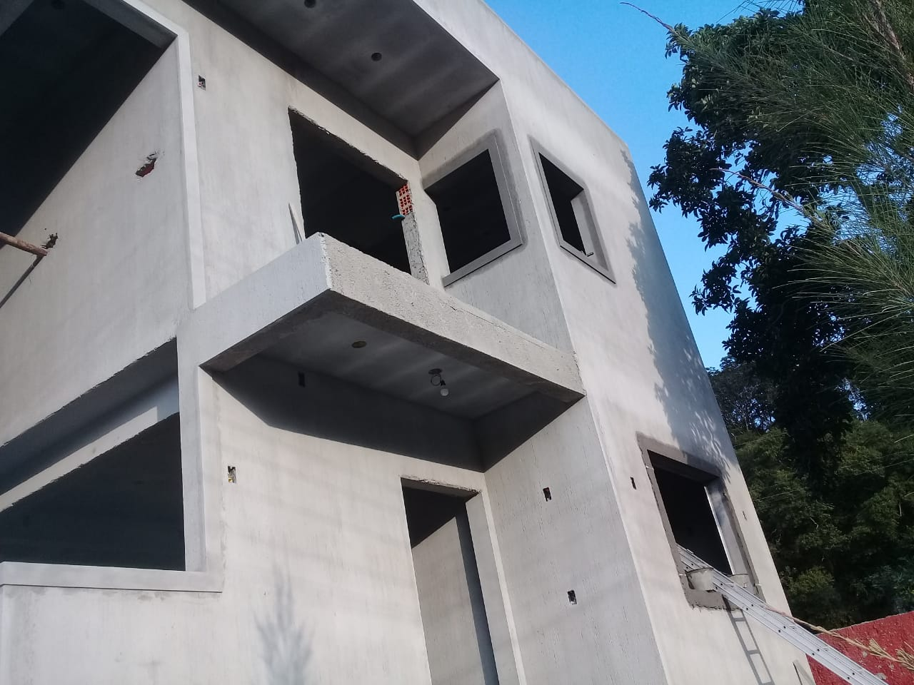
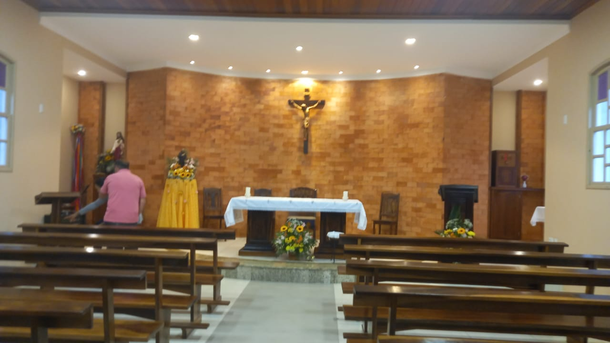
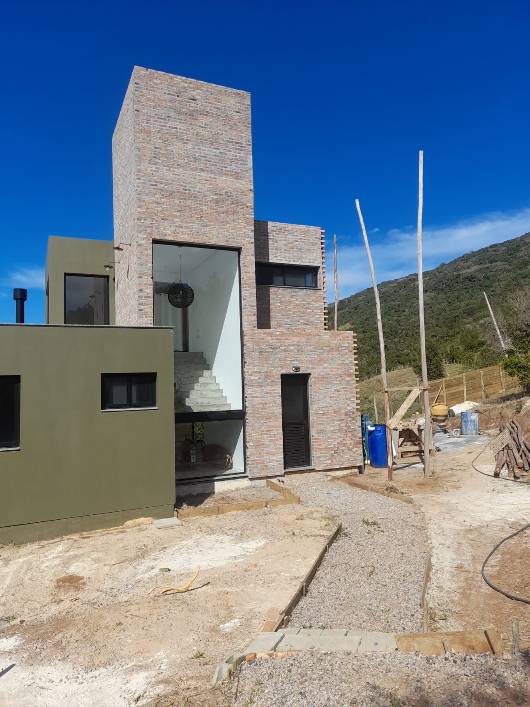

"Casa de dosi pisos, com quarto subterrâneo"

"Há Mais de 30 anos no mercado da construção civil"

"Casa de dosi pisos, com quarto subterrâneo"

""Obra comunitária, feita pela equipe Raullino em prol de ajudar a comunidade""

"Obra feita, com revestimento de tijolos à vista"